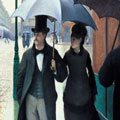
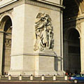

History
Known as Lutetia (Lutece) in ancient times, Paris was conquered by Julius Caesar in 52 BC, and existed as a regional center under the Romans and in the early Middle Ages. In 987, HUGH CAPET, Count of Paris, became king of France, and under his successors, the CAPETIANS, the city's position as the nation's capital became established. Often characterized as spirited and rebellious, the people of Paris first declared themselves an independent commune under the leadership of Etienne Marcel in 1355-58. The storming of the Bastille in 1789 was the first of a series of key actions by the Parisian people during the FRENCH REVOLUTION.

MEDIEVAL
The French kings initially controlled little more than Paris and the surrounding region, the Île-de-France, but over the centuries steadily expanded their territory and power. Paris itself developed an increasing degree of importance as a royal capital, an ecclesiastical and cultural centre.EARLY MODERN
As early as the 12th century, the distinctive character of the city's districts was emerging. The Île de la Cité, on which the Cathedral of Notre Dame building began in 1163, was the centre of government and religious life; the Left Bank was the centre of learning, focusing on the various Church-run schools established there; and the Right Bank was the centre of commerce and finance.

18th and 19th CENTURIES
The powers of the monarchy were in theory confined by a Charter of Liberties but in practice both Louis and Charles ran an authoritarian regime reliant on Church support. On 25 July 1830 Charles issued the repressive Ordinances of St-Cloud, abolishing the freedom of the press, dissolving the Chamber of Deputies and restricting voting rights to the landed gentry only.
